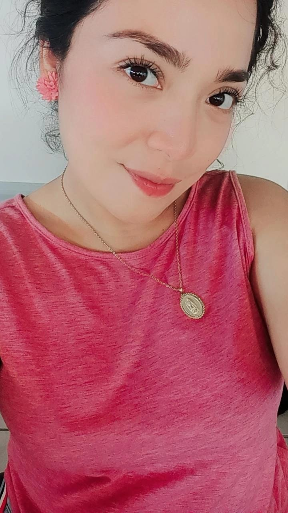

Nombre
Fecha de nacimiento
Edad
Antecedentes
Nací en la ranchería de Santana 2da sección B la palma cárdenas tabasco. Mi madre es Olga Lilia Zapata Gómez y mi padre Toribio Ramírez Rodríguez. A los 12 años ingrese a la escuela Telesecundaria Adolfo Pulido Córdova, tres años más tarde ingrese al nivel medio superior en el Cobatab Plantel 32 de libertad Cunduacán. En ambas instituciones me dieron reconocimientos de aprovechamiento por haber obtenido el primer lugar de promedio en mi generación. Me gustaba mucho participar en concursos de oratoria y declamación. Actualmente estudio un nivel superior en el Tecnológico de Comalcalco con la carrera Ingeniería En Sistemas Computacionales , esta carrera me gusta muchísimo desde que estaba en la secundaria me comenzó a llamar la atención ,hice una carrera técnica en informática y posteriormente reafirme el gusto por la tecnología ,mis padres fueron el impulso principal para comenzar a estudiar ya que tengo su apoyo siempre a pesar de las circunstancias económicas y emocionales por las que atravesamos iniciando la universidad.
Importancia
El avance tecnológico que se puede observar hoy en dia es sorprendente, es por ello que me gusta la mejora que con el paso del tiempo va teniendo el mundo en cuanto a nuevas tecnologías, es de suma importancia para mí el impacto de la tecnología en la medicina, el saber que existen robots que toman el lugar del ser humano en múltiples cirugías es sorprendente.
En lo personal los lenguajes de programación me parecen muy interesante ya que a través de ellos se pueden realizar múltiples actividades, en unos años más me gustaría mucho aprender a programar en Python y java de manera fluida ya que me permitirá tener más oportunidades en el mundo laboral. En el transcurso de la carrera he adquirido habilidades en cuanto a la resolución de problemas, capacidad de trabajo en equipo, responsabilidad y compromiso.
Objetivos a largo plazo
Si Dios lo permite
1.Encontrar un trabajo estable
2.Certificaciones en bases de datos ,seguridad informatica y programacion
3. Disfrutar de la compañia de mis padres
4.Estudiar una maestria
5.Obtener conocimientos sobre Seguridad Informatica
6.Estudiar Ciencias en la educacion
7.Aplicar para ser docente

Objetivos a corto plazo
Si Dios lo permite
1.Terminar la carrera
2.Encontrar un trabajo
3. Disfrutar de mi familia
4.Estudiar cursos en linea
Culidades
1.Responsable
2.Honesta
3.Trabajo en equipo
4.Estricta "Me gusta exigirme mucho"
4.Me gusta afrontar retos
4.Integra
4.Comprensiva
4.Optimista
4.Amorosa

Intereses Personales
1.Manejo de base de datos
2.Manejo de gestores de base de datos
3.Aprender a programar
4.Obtener conocimientos sobre redes
5.Obtener conocimientos sobre Seguridad Informatica
7.Aprender mucho mas sobre TI.